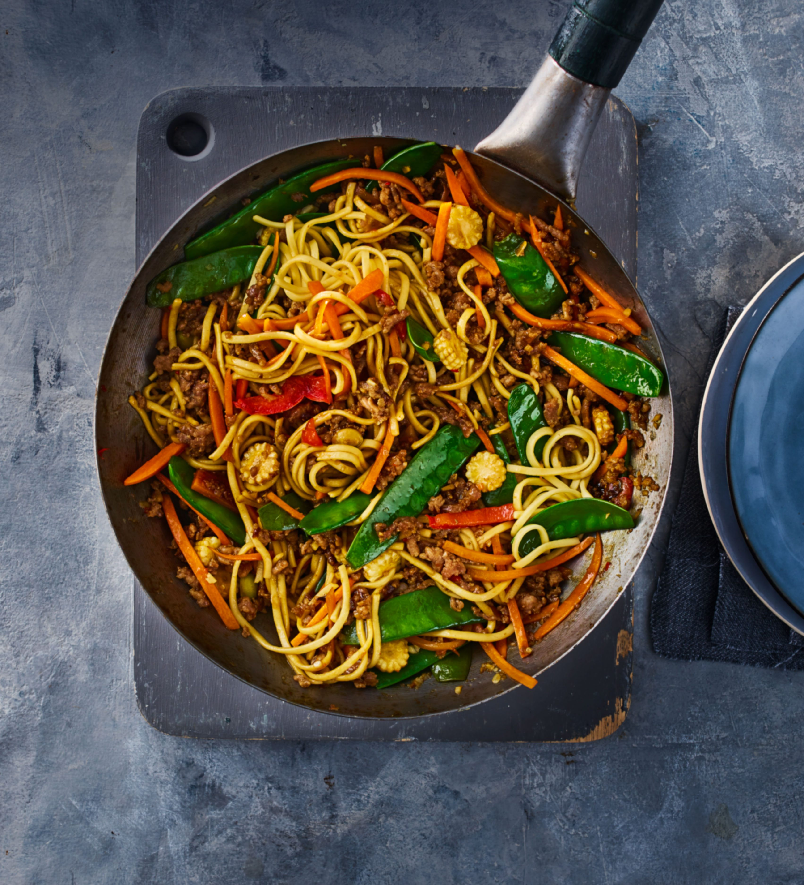

Stir Fry Noodles

Description
Noodles! Vegetables! Protein! Perfectly balanced.
You can add in whatever vegetables or proteins you like, super versatile.
Ingredients
- Noodles
- Cabbage
- Carrots
- Pak choy
- Red peppers
- Spring onions
- Onions
- Garlic
- Protein of choice - chicken, tofu, beef, whatever
- Seasonings
- Dark soy sauce
- Chinese cooking wine
- Oyster sauce
- White pepper
- MSG
- Brown sugar
Method
- Prep vegetables - thinly slice cabbage, carrots, pak choy, peppers, spring onions and onions
- Cut onions into chunks and crush garlic
- Slice protein into preferred size pieces
- Mix soy sauce, cooking wine, oyster sauce, white pepper, MSG and brown sugar into a sauce
- Add oil into wok and cook protein on high heat until cooked through
- Remove protein from the wok
- Add vegetables into the wok and cook until tender
- Add cooked noodles and protein into the wok and mix well
- Pour over sauce and combine
Home